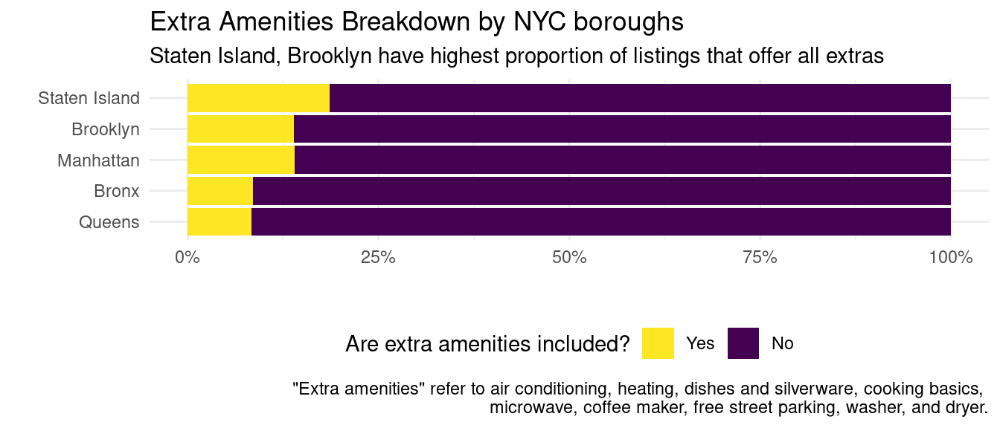
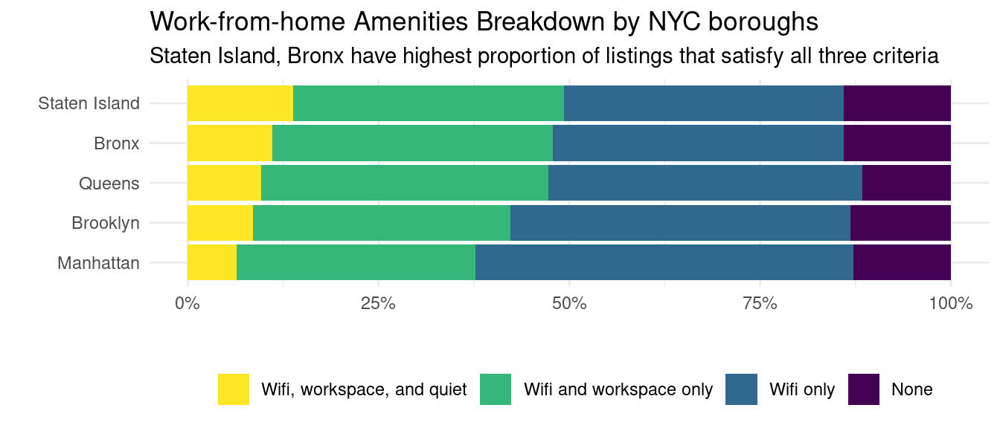
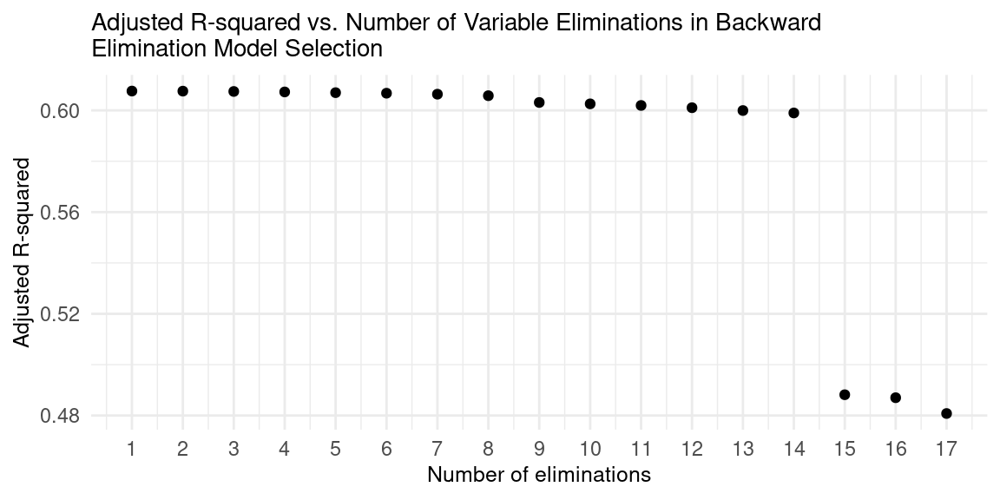
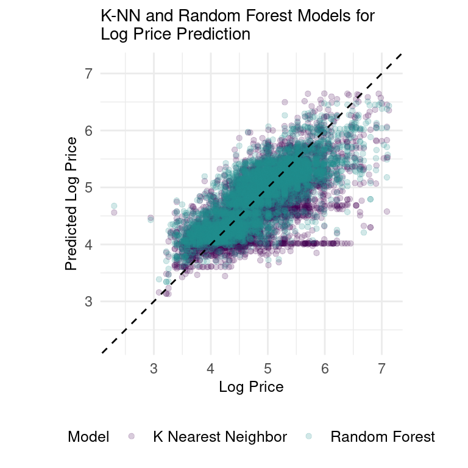

Analyzing Airbnb Data
Report
Introduction
Since its 2008 launch, Airbnb has transformed the travel and hospitality sector. Generating billions in revenue and offering over six million listings globally—surpassing the top three hotel chains combined—it has disrupted conventional travel and enabled everyday people to become hospitality providers. Studies reveal a 1% rise in Airbnb listings leads to a 0.03% drop in hotel revenues in major US cities (Dogru et al., 2019). As Airbnb expands and influences industries, research is crucial to comprehend its market and user impacts. Specifically, our research aims to identify key Airbnb factors that have strong predictability for price. Through both univariate and multivariate regression analysis and various hypotheses testings, our findings conclude that the following eight variables have the highest degree of impact on Airbnb’s price mechanism: the listing’s location, cleanliness score, room type, number of bedrooms and bathrooms, and the presence of a microwave, washer, and dryer.
Data description
In this report, we utilized the dataset obtained from Inside Airbnb, an open platform offering global Airbnb listing data to empower communities with insights on Airbnb’s residential impact. The dataset is aggregated through Airbnb’s public information on their website and contains information on over 42,000 listings in New York City as of March 6, 2023.
In terms of what processes might have influenced what data was observed and what was not, there is not much, if any. The data utilizes public information compiled from the Airbnb website, so, if a listing is on the website at the time of scraping, it will be on the dataset. No private information is being used: names, photographs, listings, and review details are all public. Furthermore, not much preprocessing was done (or explained) on the data. Evidence of this can be seen in the data. For example, the price is noted as a chr, which is likely due to it being directly scraped from the webpage.
All the Airbnb data scraped by Inside Airbnb is public, so all Airbnb hosts should be aware that their data and information can be scraped and used for other purposes. The dataset’s observations are NYC Airbnb listings, with attributes describing listings and hosts, such as price, host_is_superhost, room_type, and review_scores_rating. We performed our own data cleaning, which can be seen in Appendix 1.
What affects price?
This report examined factors influencing Airbnb listing prices in New York City. We analyzed three main categories: (1) location, (2) listing characteristics (e.g., bedrooms, amenities), and (3) host characteristics (e.g., super-host status, response time). Each variable is summarized and its relationship with price is displayed. We fit linear regression models for individual variables and perform a multivariable linear regression at the end, as well as fit machine learning models to create a price predictor model.
We observed that NYC Airbnb listing prices were heavily right-skewed, regardless of which borough they were situated in. While these prices are outliers, they should be included in this particular evaluation to consider all of the variability in prices. As such, we decided to conduct any model fitting to log(price).
Analysis 1: Location
We found that the median prices of listings are different in the five NYC boroughs. Naturally, we wanted to determine how much variability in listing prices location accounts for. Fitting a linear regression between log(price) and borough, we produce the following equation:
\[ \begin{split} \widehat{log(Airbnb~listing~price)} = 4.4947394 + 0.2206278\times Brooklyn + 0.631\times Manhattan\\+ 0.0288866 \times Queens + 0.1409128 \times Staten~Island \end{split} \]
Interpreting the intercept, we predict that a listing that is located in the Bronx will have a price of around \(e^{4.4947394} \approx \$89.54\) per night.
Interpreting the slopes:
A listing in Brooklyn is expected to be \(e^{0.2206278} \approx \$1.25\) higher per night compared to one in the Bronx, on average.
A listing in Manhattan is expected to be \(e^{0.6314541} \approx \$1.88\) higher per night compared to one in the Bronx, on average.
A listing in Queens is expected to be \(e^{0.0288866} \approx \$1.03\) higher per night compared to one in the Bronx, on average.
And, a listing on Staten Island is expected to be \(e^{0.1409128} \approx \$1.15\) higher per night compared to one in the Bronx, on average.
In addition, we see that the R2 value of this univariate linear regression model is 0.115. In other words, borough accounts for 11.5% of price variability. Because this is a low R2 value, we performed the same regression on neighborhoods (i.e. Chelsea, Midtown, Williamsburg, etc.) for increased categorical coefficients, expecting to capture more variability on a regional basis.
Due to the 221 different coefficients within this regression, showing the equation for this regression seem unreasonable. However, we can report that this model has an R2 value of 0.253, which is expected.
Comparing the adjusted R2 values of both models, we can determine that the linear model considering neighborhoods is better for log(price) predictability. However, moving forward, we will use the variable for boroughs to account for the listing location as using neighborhood levels might cause overfitting.
Analysis 2: Listing characteristics
Room type, number of bedrooms, and number of bathrooms
All data analysis on room type, number of bedrooms, and number of bathrooms can be found in the Appendix. However, to summarize:
Most NYC Airbnb listings are “Entire home/apt” and “Private room” options. “Hotel room” is the priciest, followed by “Entire home/apt,” “Private room,” and “Shared room.”
The distribution of the number of bedrooms is heavily right-skewed: most NYC Airbnb listings have one or two bedrooms. Generally, prices rise with the number of bedrooms.
Similarly, the distribution of the number of bathrooms is heavily right-skewed, with most having one bathroom. Generally, prices rise with the number of bathrooms.
We fitted univariate linear regression models with all three variables to see how much variability in price is explained by each variable.
| Characteristic | R-squared |
|---|---|
| Room type | 0.330 |
| Number of bathrooms | 0.276 |
| Number of bedrooms | 0.155 |
We see that room type has the highest R2 value, which means it accounts for the most variability in price amongst the three listing characteristics. This suggests that room type might be one of the better variables to use to predict price - we will test this in our multivariate analysis.
Extra amenities
Next, we want to look into how amenities affect Airbnb prices. On this page, Airbnb Resource Center talks about some amenities guests look for, which include dining basics, coffee & tea, and cleaning supplies among others. We want to test whether having extra amenities impacts price. In our analysis, we include the following as “extras”: air conditioning, heating, dishes and silverware, cooking basics, microwave, coffee maker, washer, and dryer. We first visualize the proportion of listings that have all the extra amenities included.

We see that Staten Island and Brooklyn are the two boroughs with the highest proportion of listings that offer all the extra amenities. However, it is quite evident that the majority of listings do not have all the extras and that the distribution is quite similar between boroughs. In other words, any impact extra amenities have on price is likely to be borough-independent.
To figure out if having all the extra amenities make a difference in price, we first group the listings by whether or not they have all the extra amenities or not and calculate the mean prices of each group. See Appendix 2B.
We indeed see that listings that offer all the extra amenities have a median price of $175, while listings that do not offer all the extra amenities have a median price of $120. To confirm that this is statistically significant, we can do a hypothesis testing. We will set a threshold value of 0.05.
\(H_0:\eta_{yes}-\eta_{no}=0\). The difference in the true median price of listings that offer all extra amenities and those that do not is zero.
\(H_A:\eta_{yes}-\eta_{no}>0\). The difference in the true median price of listings that offer all extra amenities and those that do not is greater than zero.
We observe a p-value of 0, which is less than our threshold value of 0.05. As such, we reject the null hypothesis in favor of the alternative hypothesis: the data provide convincing evidence that the median price of listings that include all the extra amenities are higher than the median price of listings that do not.
How much higher of a price can a host expect if they include all the extra amenities? To figure this out, we can generate a 95% confidence interval to see how much of a price increase a host can expect if they were to include all the extra amenities.
From our analysis, we are 95% confident that listings that include all the extra amenities will have median prices that are between $58 to $68 higher than those that do not include all the extra amenities. This is an important finding because it can help hosts increase their earnings by offering extra amenities.
Let’s now run a linear regression between each amenity and price. By doing so, we can learn how much variability in price is explained by whether a listing has a certain amenity or not. We can also find out which amenities hosts should focus on having in their listings. See Appendix 2C for further analysis.
| Amenity | R-squared |
|---|---|
| Washer | 0.04750 |
| Dryer | 0.04640 |
| Air conditioning | 0.02640 |
| Coffee maker | 0.02640 |
| Cooking basics | 0.01150 |
| Dishes and silverware | 0.00806 |
| Microwave | 0.00509 |
| Heating | 0.00150 |
We see that the top two amenities by R2 value are the washer and dryer. We can infer that these two amenities affect the price the most out of the list of eight extra amenities we started with, irrespective of which borough the listing is located in. We will test this in our multivariate analysis.
Work-from-home criteria
Upon analyzing the most frequently mentioned amenities in Airbnb listings in New York City, we observed that “dedicated workspace” appears in the top 20 amenities, which led us to think that work-from-home setups may impact price. In addition to a dedicated workspace, there are several other important amenities that Airbnb guests may be looking for in a WFH setup, including reliable high-speed internet, comfortable seating and good lighting, and a quiet environment. To identify listings that are WFH-appropriate, we established three criteria: 1) there is Wifi, 2) there is a dedicated workspace, and 3) the listing must be located in a quiet environment.

We see that Staten Island and the Bronx are the two boroughs with the highest proportion of listings with all three criteria met. Otherwise, the distribution of proportions is quite similar between boroughs. In other words, any impact WFH amenities have on price is likely to be borough-independent.
To figure out if satisfying all the WFH criteria makes a difference in price, we first group the listings by whether or not they satisfy all WFH criteria or not and calculated the median prices of each group. See Appendix 2D.
We indeed see that listings that satisfy all WFH criteria have a median price of $130, while listings that do not offer all the extra amenities have a median price of $124. To confirm that this is statistically significant, we can do a hypothesis testing. We will set a threshold value of 0.05.
\(H_0:\eta_{satisfed}-\eta_{not~satisfed}=0\). The difference in the true median price of listings that satisfy all WFH criteria and those that do not is zero.
\(H_A:\eta_{satisfed}-\eta_{not~satisfed}>0\). The difference in the true median price of listings that satisfy all WFH criteria and those that do not is greater than zero.
We observe a p-value of 0.003, which is less than the threshold value of 0.05. As such, we reject the null hypothesis in favor of the alternative hypothesis: the data provide convincing evidence that the median price of listings that satisfy all WFH criteria is higher than the median price of listings that do not.
What we can do next is to calculate a 95% confidence interval to see how much of a price increase a host can expect if they were to include satisfy all WFH criteria.
From our analysis, we are 95% confident that listings that satisfy all WFH criteria will have median prices that are between $3 to $11 higher than those that do not include all the extra amenities. This might not be too significant because the price difference is relatively small and may not justify the additional cost and effort required for hosts to satisfy all the WFH criteria.
Let’s now run a linear regression between each criterion and price. By doing so, we learn how much variability in price is explained by whether a listing satisfies a criterion. See Appendix 2E for further analysis.
| Criteria | R-squared |
|---|---|
| Dedicated workspace | 0.01390 |
| Quiet environment | 0.00177 |
| Wifi | 0.00065 |
We see that the top criterion by R2 value is dedicated workspace and the lowest criterion by R2 is Wifi. One reason for this might be the fact that Wifi is no longer a luxury, but a necessity, and having Wifi is no longer a differentiating factor. We can infer that, if a host wants to prioritize satisfying a WFH criterion, having a dedicated workspace would be the one to prioritize as it affects price the most out of the list of three WFH criteria.
Analysis 3: Host characteristics
Another point of interest when looking at Airbnb data is to see how different characteristics of the host—i.e., if they are a super host, have their identity verified, their communication review rating, etc.— might influence the price. We can start by isolating these host-adjacent variables and identify any trends that might exist. See Appendix 2F for further analysis.
We observe that nearly 24% of hosts are considered super-hosts and 84% have their identity verified. In terms of review scores, nearly 95% of hosts have an accuracy rating between 4.0 and 5.0, 90% have a cleanliness review score between 4.0 and 5.0, 96% have a check-in review score between 4.0 and 5.0, and 96% have a communication review score between 4.0 and 5.0. As for a host’s response rate, about 65% of hosts reply within an hour.
To get a better analysis of how these trends might drive listing prices, we can fit linear regression models across these six characteristics—i.e., host_is_superhost, host_identity_verified, review_scores_cleanliness, review_scores_communication, host_response_time, and host_acceptance_rate— to predict price. We will fit these models against logged price as well. After fitting these models, we get the following R2 values:
| Characteristic | R-squared |
|---|---|
| Host acceptance rate | 0.06000 |
| Review cleanliness rating | 0.02290 |
| Superhost | 0.01210 |
| Review communication rating | 0.00448 |
| Identity is verified | 0.00357 |
| Host response time | 0.00129 |
With an R2 value of 6% for host_acceptance_rate and 2.3% for review_scores_cleanliness, we can try hypothesis testing to determine the magnitude of predictability of these variables against price.
We can now begin hypothesis testing. Because the R2 values from the linear regression models for most host characteristics were marginal, we will focus our analysis on the host_acceptance_rate and review_scores_cleanliness models. We should note, however, that R2 values solely do not provide total insight into the correlation between variables, but instead indicate the amount of variability explained.
We can begin our hypothesis testing with host_acceptance_rate. By doing so, we can understand if the price is greater, on average, for listings under hosts with an acceptance rate of less than 51%. To test statistical significance, we will set a threshold value of 0.05.
\(H_0:\eta_{~acceptance~rate~<~.51}-\eta_{~acceptance~rate~>~.5}=0\). The median price of listings whose hosts have acceptance rates of less than 51% is the same as the median price of listings whose hosts have acceptance rates of greater than 50%.
\(H_A:\eta_{~acceptance~rate~<~.51}-\eta_{~acceptance~rate~>~.5}>0\). The median price of listings whose hosts have acceptance rates of less than 51% is greater than the median price of listings whose hosts have acceptance rates of greater than 50%.
We observe a p-value of 0, which is less than the threshold value of 0.05. As such, we reject the null hypothesis in favor of the alternative hypothesis. The data suggest that the median price of listings under hosts with an acceptance rate of less than 51%, on average, is higher than that of hosts with an acceptance rate above 50%. There may be several reasons for this. One reason might be that hosts with lower acceptance rates may be more experienced and have a better understanding of the market, or have better quality listings, enabling them to set higher prices for their listings.
Using the same process, we can hypothesize the effect of review_scores_cleanliness on price. Namely, we want to see if the median price of listings for hosts with a cleanliness review score between 4.0 and 5.0 is higher than that of hosts with a review less than or equal to 4.0.
\(H_0:\eta_{~cleanliness~review~>~4.0}-\eta_{~cleanliness~review~≤~4.0}=0\). The median price of listings whose hosts have cleanliness reviews greater than 4.0 is the same as the median price of listings whose hosts have cleanliness reviews less than 4.0.
\(H_A:\eta_{~cleanliness~review~>~4.0}-\eta_{~cleanliness~review~≤~4.0}>0\). The median price of listings whose hosts have cleanliness reviews greater than 4.0 is greater than the median price of listings whose hosts have cleanliness reviews less than 4.0.
Similar to the first hypothesis testing, we also observe a p-value of 0, which is less than the set threshold value of 0.05. As such, we reject the null hypothesis in favor of the alternative hypothesis. The data indicate that the median price of listings for hosts with a cleanliness review score between 4.0 and 5.0 is higher than that of hosts with a review less than or equal to 4.0.
Evaluation of significance
Fitting a multivariate linear regression model
We have looked at 22 variables spanning three broad categories (i.e. location, listing characteristics, and host characteristics). We now want to fit a multivariate linear regression model and see how much variability in price can be accounted for. As previously mentioned, the listing prices are heavily right-skewed, and thus, the price will be logged when performing the linear regression fitting.
Fitting all 22 variables in a linear regression model to predict log(price), we observed an R2 value of 0.608. The R-squared value of 0.608 suggests that the linear regression model explains 60.8% of the variability in the log of price based on the 22 predictor variables included in the model. This high degree of explanation can be useful for predicting prices in many applications, highlighting the value of the chosen predictor variables.
Performing backward elimination
The most complex model is not always the better choice. Hence, we decided to perform backward elimination on our multivariate linear regression model.
Backward elimination is a feature selection technique where variables are iteratively removed from the full model based on their significance, starting with the least significant one (i.e. the variable with the highest p-value). The process continues until the model’s performance significantly degrades. This creates a final model with only the most significant predictors, making it easier to interpret, less complex, and less prone to overfitting. See Appendix 2I for the order of elimination.

As variables are eliminated from the model, adjusted R2 decreases, which is expected as it reduces the model’s complexity. However, the first 14 eliminations maintained a relatively stable adjusted R2, indicating that the 14 variables eliminated did not significantly impact the model’s performance. The fifteenth elimination had a significant impact on adjusted R2, indicating that the final eight variables are significant in defining the model.
We can then infer that the final eight variables, that being location, cleanliness score, microwave, washer, dryer, room type, number of bedrooms, and number of bathrooms, are most significant in predicting price. It is important to note that there are some limitations to our version of backward elimination:
Order of variable elimination: In our case, we used p-value as our decision criterion. Different decision criteria, such as AIC or BIC, can be used instead, which may affect the order of variable elimination and the final model’s performance.
Interaction effects: Our implementation of the multivariate regression model and backward elimination method only considers the individual impact of each variable and may overlook interaction effects between them, which could result in suboptimal model performance.
Using machine learning to predict price
In our attempt to create a price predictor model, we fitted a random forest model and the k-nearest neighbors (k-NN) model to our dataset. The original dataset was randomly split into a training set (75% of the data) and a testing set (25% of the data). 5-fold cross-validation was performed. Our null model produced an RMSE value of 0.693.

Both the random forest and k-NN models outperformed the null model, with RMSE values of 0.418 and 0.526 respectively. The random forest model had higher prediction accuracy than the k-NN model, but it is important to note that the RMSE values are on a logged price scale, which implies that the prices predicted by the random forest model are still, on average, 1.5 times higher than the actual prices.
Although the RMSE values for the random forest and k-NN models suggest significant prediction errors, there are still ways to improve their performance. For instance, further hyperparameter tuning can be applied to optimize the models and other ML models like gradient-boosted decision trees and neural networks can be explored to determine if they can better capture the complexity of the data.
Interpretation and conclusions
By utilizing a combination of linear regressions, adjusted R2 comparisons, and machine learning techniques, we were able to identify the key variables that appeared to significantly impact Airbnb Listing prices in NYC before March 6th, 2023.
Our investigation revealed the most prominent of these factors are the listing’s location, cleanliness score, room type, the number of bedrooms and bathrooms, and the presence of a microwave, washer, and dryer. By taking these factors into account hosts in NYC can optimize their professional habits, listing qualities, and other pricing strategies to attract more guests and make more money. Similarly, travelers can make more informed decisions to find accommodations that suit their preferences and budget, resulting in a more satisfactory and efficient Airbnb experience for all parties involved.
Limitations
There are several limitations to our data and analysis:
With our current dataset, we cannot do a time-series analysis on prices since the prices listed in the main dataset is valid for the one day the data was scraped. There are more .csv files on Inside Airbnb that we can download and merge to conduct a time-series analysis on prices in the future.
We have done an analysis of Airbnb listings in NYC. How about listings in Chicago? San Diego? London? Trends we find in NYC may not be applicable in other cities. A future project might be to analyze a city similar to NYC and decide whether trends are similar.
Our price analysis on Airbnb listings in NYC did not take into account the trends at the neighborhood level. For example, how extra amenities affect price may be different in Midtown compared to in Bedford-Stuyvesant. As such, a closer look into neighborhood trends can garner more accurate insights into the prices of individual listings and how they may be influenced by various factors in specific neighborhoods.
Our analysis excludes relevant variables that could impact pricing, such as external market conditions and seasonal demand. Further analysis can be done at specific times (e.g. COVID disruption, Christmas and New Year’s).
Acknowledgements
We thank the collaborators and partners at Inside Airbnb for the comprehensive dataset.
We also found the below resources helpful:
- Introduction to Modern Statistics, First Edition by Mine Çetinkaya-Rundel and Johanna Hardin
- Tidy Modeling with R by Max Kuhn and Julia Silge
We thank Professor Soltoff and the INFO 2950 course staff for all the help and support.